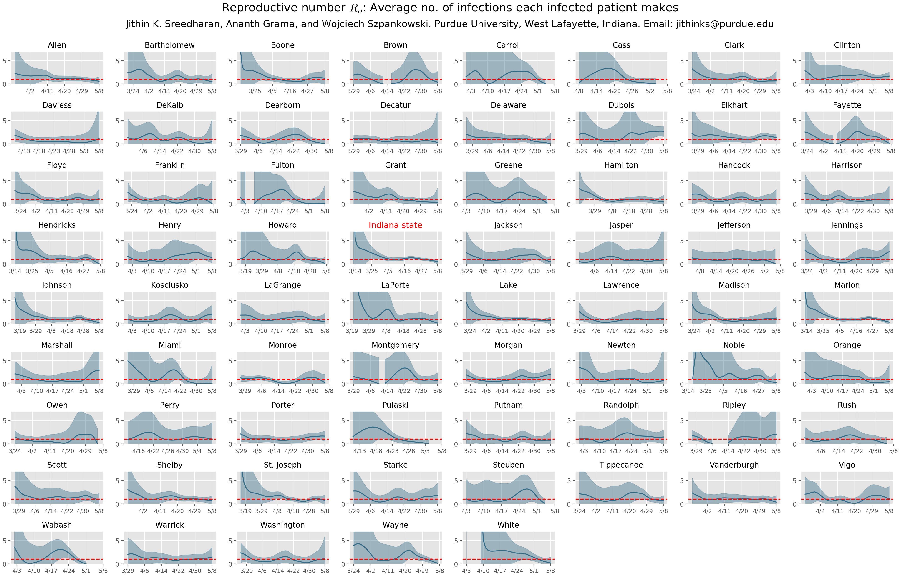

Members of the
Center for Science of Information (CSoI)
are working on epidemiological models
and predictions of spread of Covid-19 infection, the impact of social distancing guidelines,
and providing guidance for policy-making. These efforts are aimed at understanding the
current state of the epidemic (is it waxing or waning?), estimating the state in the future (its
expected progression under different policy scenarios), and impact of various interventions
(e.g., reopening workplaces, schools, etc.)
Models are only as good as the data used to construct them. To this end, the CSoI team incorporates disparate data to fundamentally enhance the predictive accuracy of the models. Working with data from Facebook, mobility data across counties is being incorporated into new models. This data allows one to assess the impact of stay-at-home guidelines, as well as best approaches to relax these guidelines.
Estimation of reproductive number
(Last data update: Ro estimation and prediction of infections - 05/13)
A useful indicator of the current state of the epidemic is the basic reproduction number (also sometimes referred to as the basic reproduction ratio). Typically represented by Ro (pronounced R-nought), this number is the average number of individuals infected by each infected individual . One may observe that a value of Ro greater than 1 corresponds to a spreading infection, Ro less than 1 corresponds to a waning infection, and Ro equal to one corresponds to a stable infected count.
Estimating Ro, though, is hard because of sparse observational data, uncertainty associated with population parameters, and variability in responses to exposure and infection. Work at CSoI has focused not just on estimating values of Ro, but also on characterizing the uncertainty associated with the value due to estimated uncertainty of population parameters. By building models for each county, these results clearly demonstrate the conformance and effectiveness of social distancing. An important aspect of this work is its use of novel computation techniques to estimate parameters for counties with sparse case reporting.
The Ro value for various counties in Indiana has emerged from one indicating a spike in infections (or more tests conducted) in Indiana, although, there is a band of uncertainty around these values.

The estimation discounts the time period requires
for transition from exposed to infected state which is roughly 5 days.
×